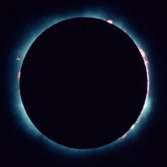
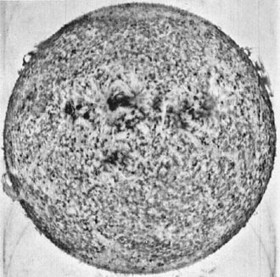
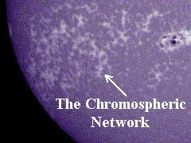

The chromosphere is the second most outer layer of the Sun. Several thousand kilometres thick, it resides above the photosphere and beneath the corona. Due to its low density, it is relatively transparent, resulting in the photosphere being regarded as the visual surface of the Sun.

Credit: B. Kramer, with permission
Temperatures in the chromosphere range from around 6,000 to 20,000 degrees Celsius. While the flux from the photosphere dominates images of the Sun, the main source of light from the chromosphere (visible during eclipses) is red H-alpha emission at a wavelength of 656 nm. This emission arises when an electron transitions from the n=3 to n=2 orbital state around a hydrogen nucleus.

Credit: NASA
The main structural feature of the chromosphere are its spicules. These “spikes” are narrow jets of bright gas which rise up from the photosphere and sink back down on a time scale of roughly 5 to 15 minutes.
Also visible is the “chromospheric network”, delineating the magnetic structure immediately above the photosphere.

Credit: NASA